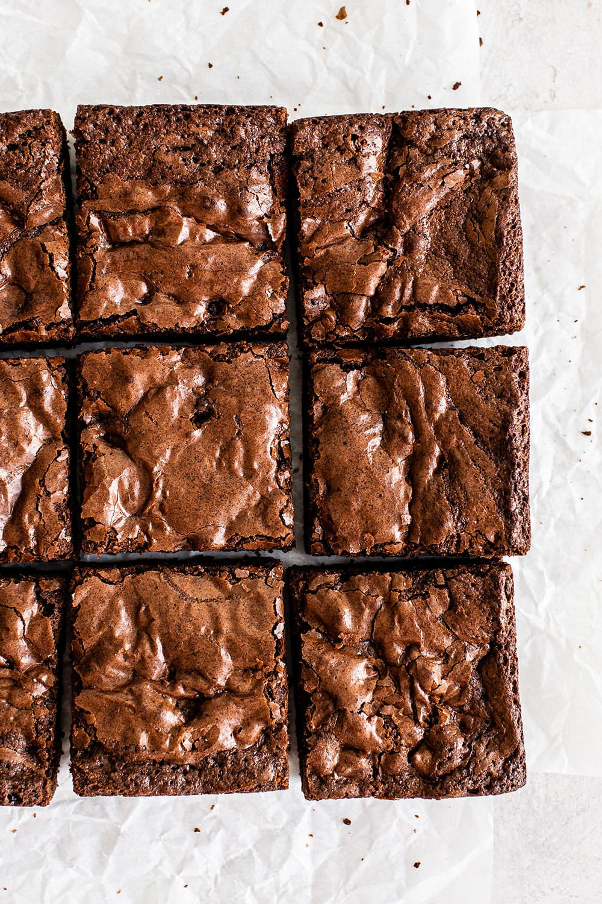

Easy chewie brownies

If you love box mix brownies, you'll love these both for their chewiness and for how easy these are
These brownies get their main chocolate flavor from cocoa powder with semi-sweet chocolate chips stirred into the batter
Ingredients
- 1/3 cup vegetable oil
- 5 tablespoons unsalted butter
- 3/4 cup unsweetened cocoa powder
- 1 teaspoon vanilla extract
- Brown or white sugar (brown has more moisture)
- 2 large eggs plus 1 egg yolk, cold
- 1/2 cup of flour
- 1/8 teaspoon of baking powder
- 1 tablespoon of cornstarch
- 1/4 teaspoon salt
- 3/4 cupsemisweet chocolate chips
Steps
- Preheat the oven to 325°F. Line a 8 by 8-inch pan with foil or parchment paper and spray with nonstick cooking spray.
- In a microwave safe bowl, add the butter and sugar. Microwave for about 1 minute, or until the butter is melted. Whisk in the eggs, egg yolk, and vanilla. Stir in the oil and cocoa powder.
- With a rubber spatula, stir in the flour, baking soda, cornstarch, and salt until combined. Stir in the chocolate chips.
- Spread the brownie batter evenly into the prepared pan. Place in the oven and bake for 30 minutes, or until the brownies are set and a cake tester inserted into the center has moist crumbs attached. Do not overcook. Let cool completely before cutting and serving.
- Brownies can be stored in an airtight container at room temperature for up to 3 days.
Back to Homepage